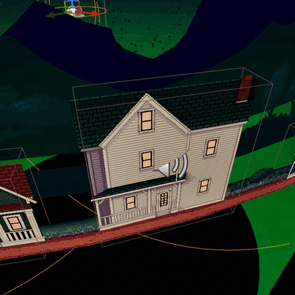

Cloud Sculptor
Sculpting videogame - graphics, UI, gameplay programming - 2024 to 2025


Sculpting runs on sparse octrees of voxel data, meshed and smoothed using a surface-nets-like algorithm.
Edits are made via SDF-intersection and only update nearby triangles.
Built with Unreal Engine, mostly in C++.
Custom UI logic with a number of widget types and animations.
Official
Playtopia 2025
selection.
Wishlist on Steam
here,
or play on Itch
here.
Foolish Earthlings!
UFO videogame - graphics, UI, gameplay programming - 2024 to present


Levels are implemented as wrapped cylinders, so all actors and
components need their movement and trace logic changed.
Destroy buildings dynamically by drawing to mask texture and heat textures.
Built with Unreal Engine, with radial movement actors and components in C++ and most programming by me.
Wishlist on Steam
here.
M0zrat Web Toys
web toy series - graphics, gameplay programming - 2025 to present


Renders by sending full state to a few full-pass glsl shaders, plus some post-process passes.
Built using vanilla javascript and the p5.js library, as a way of exploring simple design loops.
Play with them in the gallery.
Other notable projects
Tahitian Driftin'
(released 2025) - sound implementation, some particle and shader programming
HAG
(released 2023) - gameplay programming, sound implementation
Soundshader (2025, private) - native tool for building sound files in compute shaders, sample by sample.
Built with WGPU and Odin lang. Composite waveforms, wavetables, delays, and convolution in WGSL.
Tools and skills
Unreal Engine, C++ and building from source
Steam publishing tools
Godot
Web development (front- and back-end)
Engine programming and modern graphics APIs (Metal, WGPU)